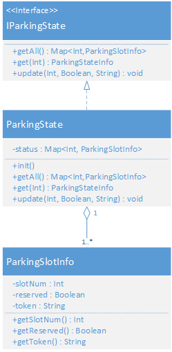

|
The internal state of the parkingArea was represented as a map, whose keys are the id of the parkingSlot.
Each parkingSlot (modelled as the kotlin class ParkingSlotInfo), holds as information whether it is
reserved, whether it is occupied and the client's token in case it is occupied. We differentiated between the concepts of reserved and occupied because, as we clarified with the customer, the client can send the request to park even if it is physically distant. So, a parkingSlot becomes reserved after the enterRequest, while it becomes occupied only after the car is deposited inside the parking. In this way we can deal with clients entering the parking in a different order from that of their enterRequest. We opted for saving the state in a map kept in memory instead of a database because the state is small and because it is less resource demanding. However, we have made the design modular, so if in the future a database will be needed, you will only need to reimplement the interface. Those classes can be found in the kotlinCode folder, under the
eu.musarellatripi.domain package.
|
 |
| MsgType | MsgId | MsgContent |
|---|---|---|
| Request | enterRequest | enterRequest(_) |
| Reply | slotNum | slotNum(SLOTNUM) |
| Reply | error | error(weighttoohigh) |
| Reply | error | error(trolleystopped) |
| Request | carEnter | carEnter(SLOTNUM) |
| Reply | token | token(TOKENID) |
| Reply | error | error(valuesnotvalid) |
| Request | pickUpRequest | pickUpRequest(TOKENID) |
| Reply | pickUpReply | pickUpReply(STATUS) |
| Reply | error | error(wrongtoken) |
| Reply | error | error(outdoorbusy) |
| Reply | error | error(trolleystopped) |
| MsgType | MsgId | MsgContent |
|---|---|---|
| Request | getValue | getValue(_) |
| Reply | sensorValue | sensorValue(VALUE) |
| Dispatch | setValue | sensorValue(VALUE) |